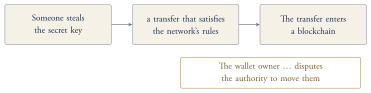
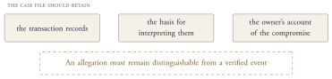
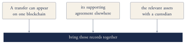

Consider a fictional case. Someone steals the secret key used to send assets from another person’s digital wallet. The key lets its holder sign transaction instructions. The attacker uses it to make a transfer that satisfies the network’s rules.
The transfer enters a blockchain, a shared transaction record maintained by network participants. The wallet owner can see where the assets went and disputes the authority to move them. Both parties can examine the same sequence while disagreeing about the rights that survived it.
A legal claim asks a court or another competent body to determine or protect a right. The claimant, the person bringing it, needs a fair hearing and a route to obtain any remedy awarded. The other party needs an opportunity to answer.
I want traditional legal institutions to provide that route for on-chain activity: transactions recorded on a blockchain. Those institutions need enough authority to resolve disputes. People using them need ways to detect misconduct and challenge their decisions.
A transaction can follow network rules while ownership remains disputed
The forum must decide rights that the network’s rules may leave unresolved. I see an institutional blind spot when reducing dependence on an intermediary becomes a theory for dispensing with institutions altogether.
Restricting an operator’s discretion gives people a useful protection. They can inspect the rules governing an asset and the conditions under which it can move. Independent participants can check whether a transaction followed those rules and preserve evidence if the operator changes its account.
Legal entitlement asks who has rights to the asset. A person may control the key used in a transaction after acquiring it through theft. The original owner, the recipient, and a later buyer can have different claims. The applicable law determines their rights.
The International Institute for the Unification of Private Law distinguishes factual control from a valid transfer of rights in its 2023 digital-asset principles. The validity of a transfer depends on other applicable law. Principles on Digital Assets and Private Law, commentary 6.5.

The case file should retain the transaction records, the basis for interpreting them, and the owner’s account of the compromise. An allegation must remain distinguishable from a verified event. Each party needs access to material it is entitled to contest, under the proceeding’s confidentiality rules.


The record should also identify the adjudicator, the person or tribunal deciding the case, and establish the appointment, submitted questions, and governing procedure. A recipient asked to act must check whether the decision remains effective or a stay, a legal suspension, prevents that action.
A judgment needs a lawful way to affect the asset
A design risk for traditional legal technology is treating the judgment as the end of the technical problem. Execution, the work of giving a decision effect, requires the order to reach someone able and entitled to act.

The order must concern the right asset and preserve its conditions when the recipient translates it into an action. A later suspension must reach the same systems.
Uploading a document can assist this work. Connecting the decision to an asset also requires a defined relationship between the legal instrument, the responsible institution, and the software controlling the action. The recipient must establish what the decision permits before the software acts.
If a custodian, an institution holding assets for others, holds the disputed asset, action depends on its legal duties and powers.
Funds held in escrow, an arrangement that holds them until specified conditions are met, might be released under agreed rules after a decision authenticated as coming from its stated issuer.
Each route needs its own authority and technical means. For assets in a wallet outside those arrangements, the claimant may need relief against a person or other reachable property.
The original transaction can remain in the ledger while a later transfer or payment gives effect to a remedy. The available route depends on the facts, applicable law, and assets within reach.
The record must therefore distinguish a decision, an instruction, and an observed result. A custodian’s acknowledgment establishes receipt of the instruction. Evidence of a resulting transfer establishes performance to that extent, with any unpaid balance remaining due.

Through refusal, interruption, or review, the claimant should be able to see what remains owed and who is responsible for the next act.

Each legal instruction must limit the action it permits
A system able to act on legal decisions also creates a power that can be misused. A general power to move everyone’s assets would concentrate that risk in the people operating the dispute service.
Each instruction should identify the issuing institution, the parties and assets concerned, the permitted action, and when it can take effect.

The receiving system should check those limits under rules it has already adopted. It should be able to reject an instruction outside that authority independently of the issuing operator. A changed instruction needs corresponding authority, with the original decision and any correction retained.
Independence matters inside the proceeding too. An operator accused of mishandling a case should face review outside its control. Parties need a way to challenge an adjudicator’s conflict of interest, with the relevant evidence still obtainable if the service relationship breaks down.
Emergency powers need the same specificity. A temporary hold should state its legal basis, the assets it covers, and the conditions for review or expiry. Anyone implementing it needs a way to receive and authenticate a later decision that changes its effect.
A company choosing a provider can negotiate limits on intervention and rights to move its service elsewhere. Someone subject to compulsory jurisdiction may have no such choice. That person’s protection depends especially on an effective challenge procedure.
A claimant should be able to use records from every blockchain
The disputed right may concern several systems. A transfer can appear on one blockchain, its supporting agreement elsewhere, and the relevant assets with a custodian. A claimant should be able to bring those records together. Each action’s record must identify the relevant jurisdictions and institutions.


Compatibility requires reliable ways to identify each transaction, interpret its status, and establish what the destination can do. Different blockchains require different checks. A common case format must preserve those differences.
A receiving institution applies the rules governing its own powers. Recognizing a foreign decision means giving it legal effect. That may require a separate process before action. Shared software can convey the decision and supporting material while keeping that requirement visible.
I would make compatibility with every blockchain a design requirement. People should be able to seek assistance while leaving the disputed asset where it is. Any remedy still depends on the authority and means of execution available in that case.
Institutions could then share case records and verification methods while retaining their law, procedures, and responsibility for decisions.
An institution adopting a shared practice should check the supporting proof and record what it chose to adopt. If facts or rulings change, affected parties need those records to challenge the resulting actions, under the records’ confidentiality and access rules.
Companies need to establish authority before their software acts
Businesses are assigning more of their operating work to artificial intelligence (AI) agents, software that acts on their instructions. As that work becomes automated, legal challenges must reach the resulting actions. An agent’s AI model supplies its reasoning and responses.
A company’s agent must respect its authority and obligations. The work includes creating assets and establishing their rights, called origination, then maintaining those rights as the company operates. That requires connected records, permissions and applicable rules.
Mass lets AI agents automate companies, trade, commerce and markets, and the origination, management and maintenance of assets, end to end and across borders. Every action they take is compliant and lawful by default. Mass runs companies, institutions, and deployments.
Each company’s own AI agent, on any AI model it chooses, drives the company’s operations from formation to closure. Mass makes the compliance call before each action runs.

It learns from every economy it serves how to combat fraud and which practices work best. It learns which checks, evidence and consents each case needs. Lessons carry proofs each receiving institution checks before choosing what to adopt.
Each economy that connects adds a market for every company on the network, and once enough economies run on one network, those that come later build on it. Claims need records across markets.
The United Arab Emirates has agreed to deploy Mass for the entire federal economy, starting with pilot programmes in the emirates of Ras Al Khaimah and Abu Dhabi.
The Abu Dhabi Global Market deployment is live in production. The UAE pilot is live. Reporting to the National Economic Registry (NER) of the United Arab Emirates is live. Each pilot requires at least 10,000 entities per jurisdiction. Records must link challenged actions to entities.
As with the wallet owner’s transfer, someone may dispute the facts or authority behind an agent’s action. I want the action’s records to remain available for independent examination.
People and institutions can use the same dispute service
A financial free zone, where businesses operate under a designated legal and regulatory framework, needs dependable dispute resolution. A person whose wallet was hacked needs to bring a claim and understand the available remedy. Both could use the same service.

They could pay for case preparation, practitioner services, administration, and required filings under disclosed terms. Fees should pay for defined work. Adjudicator selection and conflict procedures must protect decisions from the payer’s influence.
Connecting these institutions requires a network through which records and lawful instructions can reach the right recipient. Momentum builds the network. I want that connection to serve people across blockchains and people with assets outside them.
My work on Recourse is at the research and design stage, ahead of company formation. Recourse runs dispute resolution and carries outcomes into execution.
Its design covers case administration, consent and authority records, and authenticated outcomes sent to courts, custodians, and providers entitled to act. Courts retain judicial power. Recovery depends on the remedy, reachable assets, and completed execution.
I call this sovereign infrastructure because it concerns how institutions exercise authority over economic activity. Centralized powers can coexist with independently held evidence and effective procedures for challenging their use.
The next case may be against the operator. People should still be able to obtain their records, reach an independent forum, and pursue the remedy that forum has authority to grant.